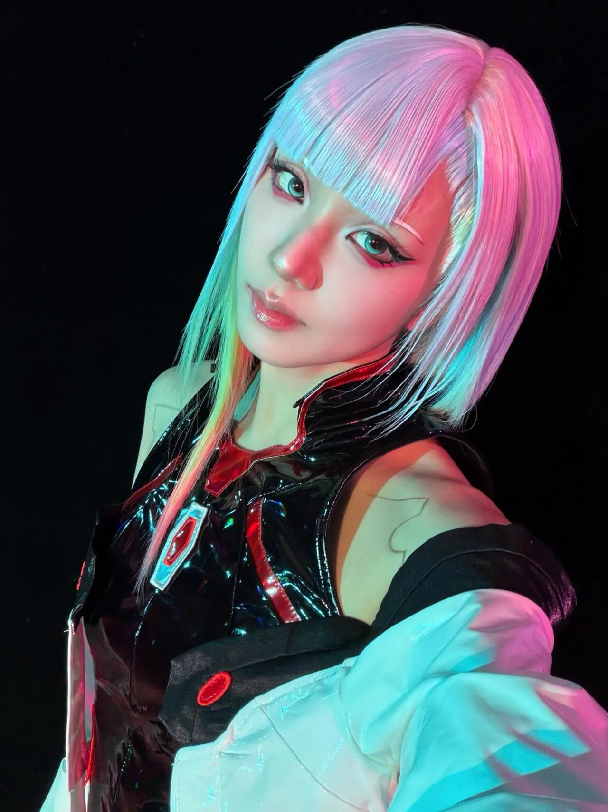
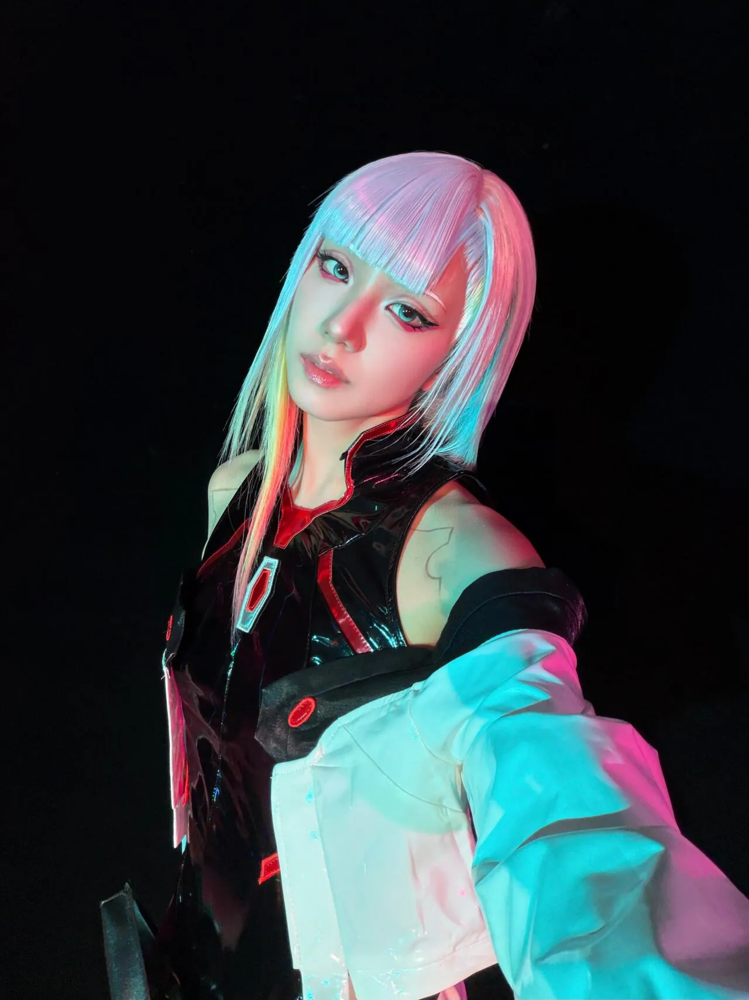

사이버펑크 루시 코스프레 함
이쁘다


사이버펑크 루시 코스프레 함
이쁘다
실제로 저랬으면 뭐..
데이비드가 홀릴만 하긴 했네
어우 이쁘다
캬
흠
뭔가 안어울리는데..지수 특유의 눈매 때문에 그런가 흠

노래 춤 연기 빼면 완벽함 진짜
오
노래 괜찮지 않음?
난 목소리가 매력적이던데
달 을 가
얼굴왤케길게나오냐
근까
?
이건 달에 가야겠네
진짜 쉽지 않은 머리스타일이긴하다 얼굴이 기일쭉 해요
연기만 하지 말아 다오.
비숍이나 하라고
이쁘긴 이쁘다
싸펑 보면서 이쁘면서 죽이고 싶은 캐릭터가 바로 루시였다..
데이비드 병신새끼
거적때기를 걸쳐놔도 이쁘긴 존나게 이쁘네
노래 연기 춤 빼곤 완벽함
ㅋㅋㅋㅋㅋ
눈을 왜 그렇게 떠
이쁘긴 존나게 이쁜데 사진도 그냥 밋밋하니 다 똑같네..
데이빗또가 왜 그런 선택을 했는지 알것같은...
재미있게 봣나봐?